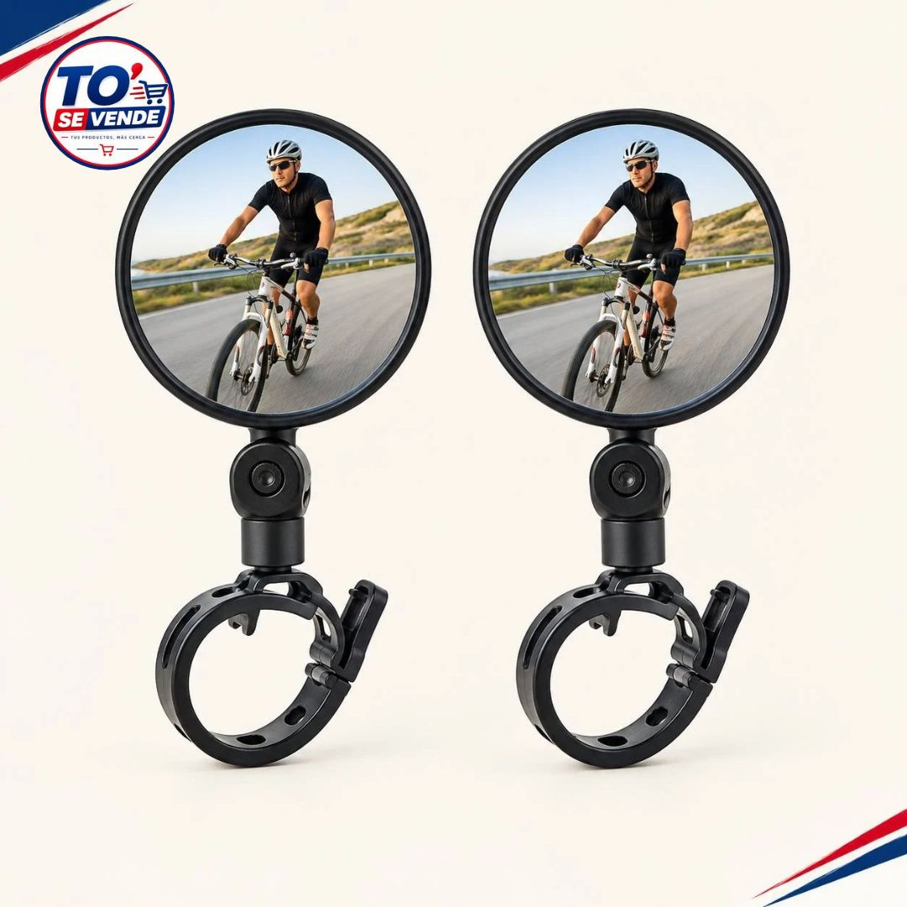

BICICLETAS Y ACCESORIOS
Espejos Retrovisores
USD
Ideal para ciclistas y motociclistas que buscan un accesorio práctico para mejorar su seguridad e iluminación visual en la carretera.
Consultar por WhatsAppConsulta la disponibilidad y coordina tu compra directamente con nosotros.